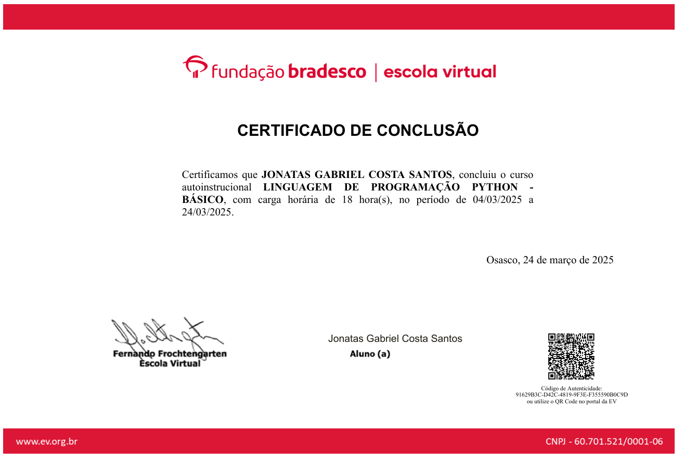

JONATAS GABRIEL
jonatasgcs40@gmail.comSou desenvolvedor Back-end com foco no ecossistema JavaScript. Tenho experiência prática em projetos pessoais utilizando Node.js, Express e MySQL, com ênfase na criação de APIs REST, modelagem de banco de dados e versionamento de código com Git.
Também estou avançando em TypeScript e nos fundamentos de Arquitetura e Boas Práticas no Back-end, incluindo organização de projetos e princípios de POO. Possuo ainda base em Front-end com HTML, CSS e JavaScript, além de já ter tido contato com PHP e C. Meu objetivo é evoluir continuamente na área, desenvolvendo soluções seguras, escaláveis e bem estruturadas.
🧠 Soft skills
- Organização
- Comunicação clara
- Facilidade para aprender
- Trabalho em equipe
- Persistência e foco
TECNOLOGIAS
Tecnologias e Ferramentas
Tecnologias e ferramentas que utilizo no meu dia a dia de estudos e desenvolvimento, com foco principal em Back-end.
🔹 Linguagens
 JavaScript
JavaScript TypeScript
TypeScript PHP
PHP C
C🔹 Back-end
 Node.js
Node.js Express
Express🔹 Banco de Dados
 MySQL
MySQL SQL (Queries)
SQL (Queries)🔹 Ferramentas / DevTools
 Git
Git GitHub
GitHub WebStorm
WebStorm MySQL Workbench
MySQL Workbench🔹 Front-end
 HTMLJavaScript
HTMLJavaScript React (em estudo)
React (em estudo)🔹 Conceitos
- POO
- APIs REST
- Banco de dados relacionais
- versionamento com Git
PROJETOS
EDUCAÇÃO
Graduando em Engenharia da Computação / 2027
Universidade CEUMA — São Luís, MA
Para saber mais sobre minha trajetória acadêmica e profissional, baixe meu currículo completo no botão abaixo.
Baixar CurrículoCertificações e Cursos

